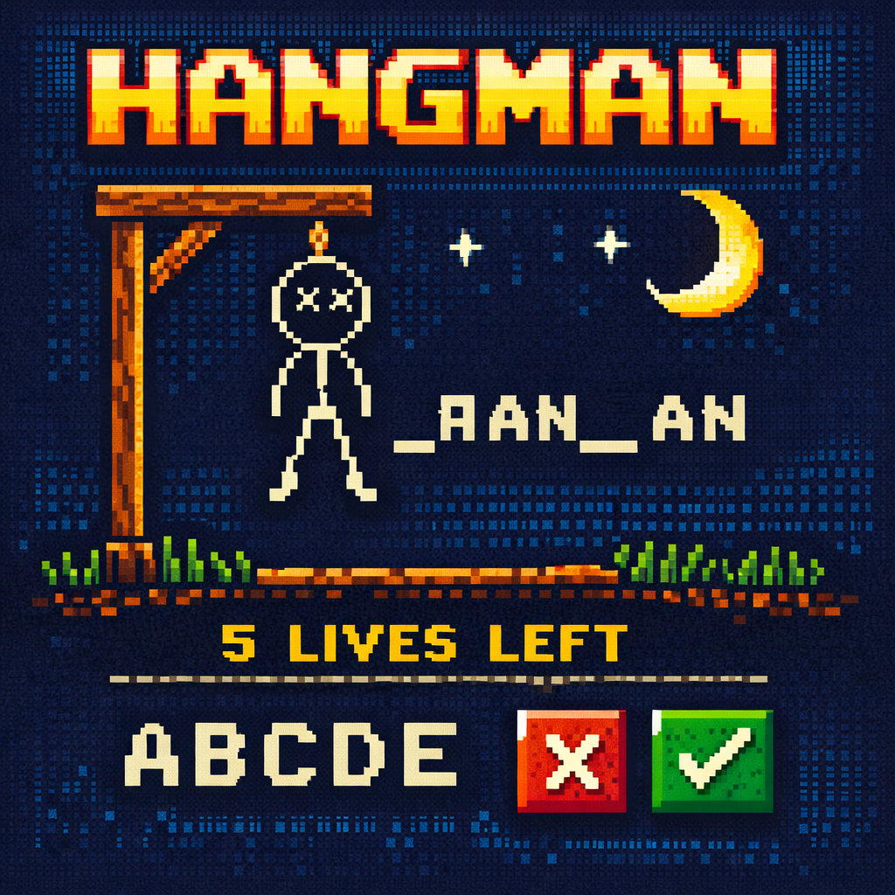

100 Days of Python - Days 6 and 7
Posted on June 9th 2026

Day 6 was a good one. After the mental workout of learning loops for the first time, today felt a lot more manageable. The lesson focused on defining your own functions and getting more familiar with the built‑in Python functions we’ve already been using, like len(). There are a ton of built‑ins out there, and it’s starting to feel like Python has a tool for almost everything if you just know where to look.
Writing your own function is pretty simple on the surface. You type def function_name(): and indent whatever you want that function to do. The indentation rules are the same ones we’ve been following with if statements and loops. What I liked about today is that functions finally started to feel useful, not just something the instructor told us to learn. They make your code cleaner, easier to read, and way easier to reuse.
We also covered while loops and how they differ from for loops. The best way I can describe it is this: a for loop runs a set number of times, almost like following a checklist. A while loop keeps going until something changes, which makes it great for situations where you don’t know how many repetitions you’ll need. Both loops have their place, and learning when to use each one is part of getting comfortable with Python.
After that, the instructor introduced a site called Reeborg's World. It’s a little robot you control with Python, and it turned out to be a fun way to practice everything from loops to functions. We went through all the hurdle challenges, and the final one was a maze. I managed to get through all of them without too much trouble, but I definitely wrote more code than I needed to. That seems to be a habit of mine. I solve the problem, but then I look at the instructor’s solution and think, “Oh… that’s way cleaner.” It’s not a bad thing though. It just means I’m still learning how to think more efficiently.

Overall, Day 6 was solid. Nothing felt overwhelming, and it was nice to have a day where things clicked without the usual confusion. I’m still learning, still making mistakes, and still writing more lines than I probably need to, but that’s part of the process. Every day adds a little more confidence, and I’m excited to keep going.
from random_word_list import word_list
import random
from hangman_art import logo, stages
print(logo)
print("Lets play some Hangman!")
random_word = random.choice(word_list)
game_over = False
lives = 6
placeholder = []
guessed_letters = []
word_length = len(random_word)
# Create placeholder list of underscores
for length in range(word_length):
placeholder.append("_")
print("".join(placeholder))
while not game_over:
user_guess = input("Guess a letter to see if it's in the word!\n>> ").lower()
# Check if already guessed
if user_guess in guessed_letters:
print("You already guessed that letter dummy!\n")
continue
else:
guessed_letters.append(user_guess)
# Reveal letters
if user_guess in random_word:
for index, letter in enumerate(random_word):
if letter == user_guess:
placeholder[index] = user_guess
else:
lives -= 1
print("Wrong guess!\n")
# Check lose condition
if lives == 0:
print("You lose!\n")
print(f"The word was: {random_word}. Better luck next time!\n")
game_over = True
# Check win condition
if random_word == "".join(placeholder):
print("You win!\n")
game_over = True
# Print updated board
print("".join(placeholder))
print(f"You have {lives} lives left\n")
print(stages[lives])
Day 7 was an interesting one. The entire lesson revolved around creating a Hangman game, and man, it took me a while to figure out. We didn’t really learn anything brand‑new; it was more about revisiting everything we’ve covered so far and finally putting it all into action. One thing I actually enjoyed was making my first flowchart. I never really thought about using them before, but once I saw how much they help keep your thoughts organized, I realized I’ll probably be using them a lot more moving forward.
I went through each step of Day 7 struggling pretty hard. It was frustrating because in my head, I felt like I should’ve been able to handle it with everything I’ve learned up to this point, but for some reason I just couldn’t get it to work. I couldn’t even figure out why it wasn’t working, which made it worse. I eventually looked at the solution and let the instructor walk through it, but honestly, that didn’t sit right with me. She always says that if we’re not struggling, we’re not learning and she’s right. The whole point of these exercises is to train your brain to think like a programmer. Even when you’re failing, you’re still building those problem‑solving muscles.
I spent a few hours trying to solve it on my own and still came up short. The last couple of sections I managed to finish mostly by myself, but by the end of the day I was just over it. I logged off feeling like I hadn’t made any real progress. The next morning, though, I opened a fresh PyCharm project and decided to start from scratch. I ended up working on Hangman for another two or three hours and this time, I actually finished it. I had to Google quite a bit, and I even discovered a new function I hadn’t used the night before: enumerate(). It returns both the index number and the letter when looping through a word, which made part of the logic way easier. I won’t go too deep into it here, but I’ve included my Hangman script above if you want to check it out.
The only thing I'd like to add is the code i'm providing is in no way the best way to code hangman. It was simply the way I did it as I stuggled through it. You can play it here Play Hangman.